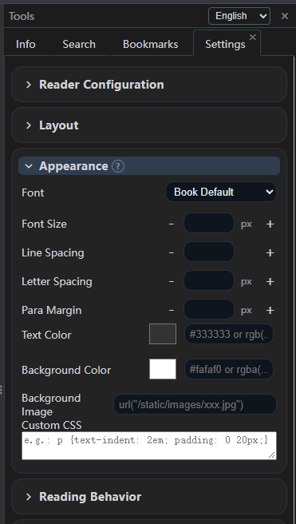

Appearance & Theme
Appearance only changes how the book looks; the content and the book file stay untouched.

Font and size
- Font — pick a built-in font or Book Default. When a local font is used, the browser may ask for permission.
- Font Size — enlarges or shrinks the text as a whole.
- Line Spacing / Letter Spacing / Para Margin — control the space between lines, between letters, and between paragraphs.
Color and background
- Text Color — hexadecimal (e.g.
#333333) orrgb(...). - Background Color —
#rrggbborrgba(...); leave empty to follow the book. - Background Image — a CSS background image URL.
- Empty values follow the book instead of overriding it.
Custom CSS
If you know CSS, you can refine the text further — for example a first-line indent:
p { text-indent: 2em; }
If not, just leave it empty.
Light and dark theme
The quick controls bar has a light/dark toggle; it switches the theme of the reader interface. It is separate from the background color above: the theme styles the interface, the background color styles the text.